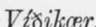
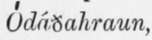

The Probable Genesis Of Askja And Iceland. Part 2
Description
This section is from the book "Askja: Iceland's Largest Volcano", by W. G. Lock. Also available from Amazon: Askja: Iceland's Largest Volcano.
The Probable Genesis Of Askja And Iceland. Part 2
It will doubtless interest my readers to know what Professor Johnstrup, in his paper before referred to, says with reference to the connection of the two scenes of eruption. 'The volcanoes here (the Orcefi) and in Askia stand in far closer connection with each other, 'the Professor says, 'than one would really expect, considering the distance they are apart, and the great difference in the volcanic operations at the two places, and also in the ejected substances.' But he appears to have been deterred from actually stating that he believed the two scenes of eruption to be connected, by the importance he attaches to the facts that ' two volcanoes near each other, and both active at one time, should be so opposite in character and should eject such totally different substances as pumice rich in silica, and basaltic lava so poor in that respect.'
The Professor appears to utterly ignore the fact, that the difference in the substances ejected is almost in itself conclusive evidence of the connection of the two scenes of outbreak, for surely the paucity of silica in the lava that welled forth in the Orcefi is fully accounted for by the tremendous pumice eruptions from Aslcja in January, and on the 29th March ! Still these peculiarities in the 1875 eruptions are very interesting- facts, as they confirm the opinion of mineralogists that much of the perplexing variety of textures of lavas arises from the lesser or greater intensity of the heat, and likewise of pressure from gases to which they are subjected when in a molten state.
It cannot be questioned that the chief of the Dyngjufjdll, with its vast crater Askja, is justly entitled to rank as 'Iceland's Largest Volcano,' notwithstanding that no earlier eruption there than those of 1875 is recorded, and that prior to February of that year it was not known that an almost circular crater, having an area of at least twenty-three square miles, was embosomed in the largest mountain-mass rising amidst the Oddfiahraun. It may be that its highest peaks, those south-west of the lake, do not attain so great an altitude by three or four hundred feet as that said to be attained by the summit of the Orcefa Jokull, 5,927 feet (Watts), but it is also possible that the altitude of that volcanic Jokull has been exaggerated, and I think it likely that when the altitudes of both mountains have been ascertained with more nicety than at present, it will be found that the culminating point of the island is the chief of the Dyngjufjoll, whose vast outer circumference causes it to appear, when seen from a distance, a far lower mountain than it really is.
It is not unlikely that the early settlers, or their immediate descendants, were aware that this inounthe probable genesis op askja and iceland. 77 tain was a volcano. Those ' hardy Norsemen ' who sought a home in Iceland rather than abandon the Pagan religion of their forefathers at the behest of a king, whose Banners braved the gales of the western world, Long ere Columbus that of Spain unfurl'd, are not likely to have left their island home unexplored, and there can be no doubt Askja was visited. This is conclusively proved, I think, by the name borne from time immemorial by the mountains around, Bower-mountains, the bower being the crater Askja. In the course of time the verbal accounts of these early explorations became forgotten lore ; and, as nothing was to be gained by venturing into a wilderness of igneous rock, the interior of Iceland east of the Sprengisandr (Bursting Sand) became a terra incognita to the listless and apathetic, yet kindhearted and hospitable modern Icelanders, till Jon of  in 1875, and Mr. Watts, in 1876, showed that the Misdeed-lava-desert is not so impassable as was believed.
Although seldom a decade passed away without a volcanic eruption in the  no one was ever bold or curious enough to visit the spots where these took place until Jon did so in 1875 ; and it was but seldom the trouble was taken even to record the date or duration of an eruption. Volcanic eruptions in Iceland more often than not take place in thick weather, and, moreover, are invariably attended with the emission of great quantities of steam, accordingly from the inhabited coastal districts (1 belieye that in the whole island there are not more than half-a-dozen inhabited houses distant in an air-line over forty miles from salt-water) it is impossible to see, if the eruption is any great distance off, the exact spot where it is taking place. We had an example of this in 1875. Burton publishes (p. 46, vol. 1) the letter from a Reykjavik correspondent before quoted, and as it illustrates the careless way in which the Icelanders record volcanic eruptions, and 'jump to conclusions' as to the volcano active, I will give another extract therefrom, first quoting Burton's prefatory remark : ' The year after the author's departure witnessed an eruption of the Skaptarjokull, in the north-west corner of the Vatnajokull, but it lasted only four to five days. The following account appeared in the papers ; nothing more has subsequently been learned about it.'
" On Thursday the 9th January, about three o'clock a.m., we observed from Reykjavik a grand fire in east-north-east direction. (The centre of the Joknll, credited with the eruption, I would here observe, lies due east of Reykjavik, while the bearing of Askja is as nearly E.N.E. as possible, being 24° north of east.) But when daylight dawned...it was clear that it was far off, and, according to the direction, it seemed most likely to be in Skaptarjokull...When similar news came from east, north, and west, all came to the same conclusion that it must be (!) in Skaptarjokull... and according to the different points of observation, and the statement of our newspaper (!) at Reykjavik, the position of the crater ought to be between 64° 7' and 64° 18' north lat.'"
Continue to:
- prev: Chapter IV. The Probable Genesis Of Askja And Iceland
- Table of Contents
- next: The Probable Genesis Of Askja And Iceland. Part 3